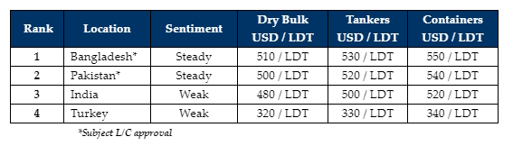

GMS Week 14 – SPRING CLEANED!
in Weekly Demolition Reports 08/04/2024

With Q1 2024 forever in the rear-view mirror, 3 weeks of the Holy month of Ramadan behind us, and Eid holidays (marking the end of the holy month) now set to commence next week across much of the world, it will certainly be another quiet week in terms of sales and activity across the ship recycling globe. Moreover, as an increasing number of vessels past beached have been nearly recycled, and barely any meaningful arrivals have been reported at the respective waterfronts (ZERO in India this week), frustrated industry players are just … going with the depressive flow.
With that being said and reportedly this week, amidst a sea of floating oldies several high-priced sales were surprisingly confirmed to the various markets (essentially Bangladesh and Pakistan), further raising eyebrows & likely giving everyone the (misdirected) impression that levels are on the up again. Perhaps the shortage of supply is further driving prices up to tempt Owners even more, amidst this excruciating tonnage famine and address head on, the extremely bleak few quarters of minimal activity and a subsequently pessimistic outlook for the ship recycling industry overall.
Meanwhile, the aforementioned frayed supply of recycling tonnage that essentially consists of much older dry bulk / general cargo vessels & container units, not only highlighting how well freight rates in these sectors have been performing so far this year, but also answering the reason for the extremely poor condition and older vessels that (have been and) are being drip-fed into the market. We have all of the ongoing geopolitical tumult to thank for having kept chartering rates this artificially elevated, thereby causing inflation to run amok in countries such as Turkey, which we may as well stop reporting about at this point as it remains deathly quiet.
In comparison, even India seems to be finding partial form once again, with some unexpected offers being tabled on the bare minimum number of available candidates. These offers are of course, well behind a firmer Pakistan and even firmer Bangladeshi market. But it is good to finally see signs of life here, as most in Alang are anxiously awaiting the election results, in the event a market catastrophe befalls the country’s economy on account of a Modi government’s re-election loss. Globally, all recycling nation currencies remarkably posted positive movements this week – including Turkey, where the Lira actually firmed at the close of the week. Having been subject to a tumultuous time, could the economies of nations dependent on ship recycling now be finding stable footing at long last? Time will certainly tell.
For week 14 of 2024, GMS demo rankings / pricing for the week are as below.

📄 Download PDF: Ship-recycling-market-insight-week-14-2024-Spring_Cleaned.pdfSource: GMS,Inc. https://www.gmsinc.net/gms_new/index.php/web
 Translate
Translate{kind=link}